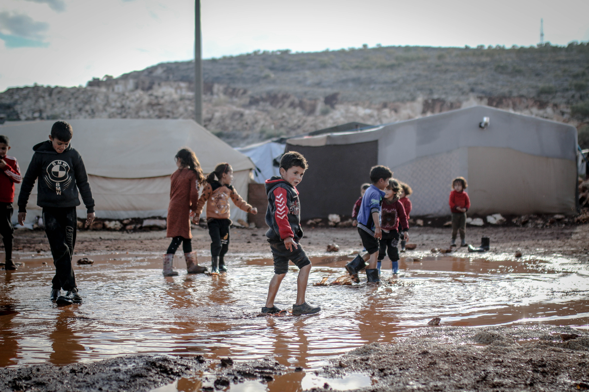

Poner fin a la pobreza en todas sus formas y en todo el mundo para 2030.
Más de 700 millones de personas siguen viviendo en condiciones de pobreza extrema y luchan para satisfacer sus necesidades más básicas, como la salud, la educación y el acceso al agua y el saneamiento, por mencionar algunas.
Es una gran cantidad de personas. Sí. La inmensa mayoría de las personas que subsisten con menos de 1,90 dólares diarios viven en Asia Meridional y África Subsahariana, y representan alrededor del 70% de las personas que viven en situación de pobreza extrema en todo el mundo. Aproximadamente la mitad de los pobres del mundo viven en países de ingresos medianos bajos como China, la India, Indonesia y Nigeria.
Sin embargo, este problema afecta también
a los países desarrollados. Actualmente hay 30 millones de niños que crecen pobres en los
países más ricos del mundo.
Actualmente hay 30 millones de niños que crecen pobres en los países más ricos del mundo

La pobreza tiene muchas dimensiones, pero sus causas son el desempleo, la exclusión social y la alta vulnerabilidad de determinadas poblaciones a los desastres, las enfermedades y otros fenómenos que les impiden ser productivas.
Hay muchas razones, pero en resumen, porque como seres humanos, nuestro bienestar está vinculado al de las demás personas. El aumento de la desigualdad es perjudicial para el crecimiento económico y socava la cohesión social, lo que incrementa las tensiones políticas y sociales y, en algunos casos, impulsa la inestabilidad y los conflictos.
Sí. Para poner fin a la pobreza extrema en todo el mundo en 20 años, el economista Jeffrey Sachs calculó que el costo total por año rondaría los 175.000 millones de dólares. Esto representa menos del 1% de los ingresos conjuntos de los países más ricos del mundo.
Si eres joven:
Tu participación activa en la formulación de políticas puede marcar la diferencia en la lucha contra la pobreza. Con ella te aseguras de que se promueven tus derechos y de que se escucha tu voz, de que se comparten los conocimientos intergeneracionales y de que a todas las edades se fomenta la innovación y el pensamiento crítico, en apoyo de un cambio transformador en las vidas de las personas y las comunidades.
Si se dedica a la formulación de políticas:
Los gobiernos pueden ayudar a crear un entorno propicio para generar empleo productivo y oportunidades de empleo para los pobres y los marginados. Pueden formular estrategias y políticas fiscales que estimulen el crecimiento económico de los pobres y por tanto, reducir la pobreza.
Si usted trabaja en el sector privado: el sector privado, como motor del crecimiento económico, tiene un importante papel a la hora de determinar si el crecimiento que genera es o no inclusivo y, por consiguiente, si contribuye o no a la reducción de la pobreza.
El sector privado puede promover oportunidades económicas para los pobres centrándose en los segmentos de la economía donde trabaja la mayoría de estas personas, a saber, las microempresas y las pequeñas empresas, y las que operan en la economía informal.